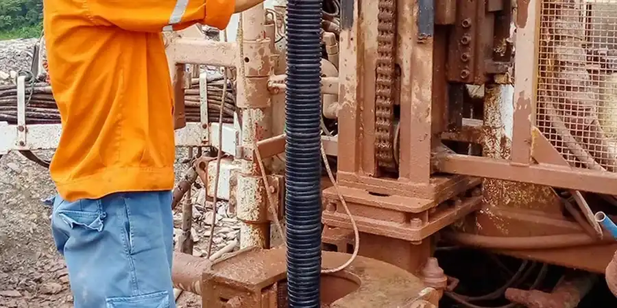

Welcome to our Brandon, Manitoba office. We provide comprehensive geotechnical services tailored to the region's unique subsurface conditions, from site characterization and foundation design to subsurface investigation and construction compliance. Our local team combines consolidated regional experience with calibrated equipment to deliver code-compliant reports that support safe and efficient development. Whether you are planning a residential subdivision, a commercial building, or a municipal infrastructure project, we offer the full spectrum of geotechnical expertise—including soil mechanics study, groundwater monitoring, and slope stability analysis—to guide your project from concept to completion. Learn more about our approach.
